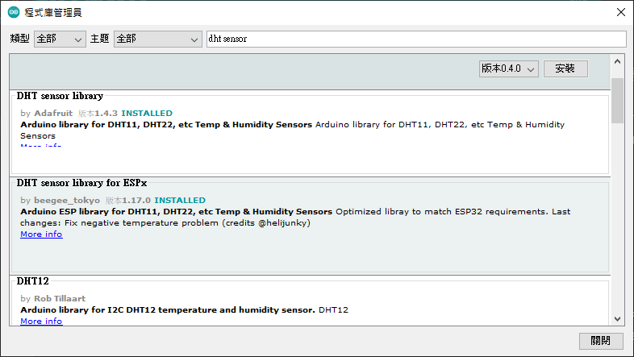
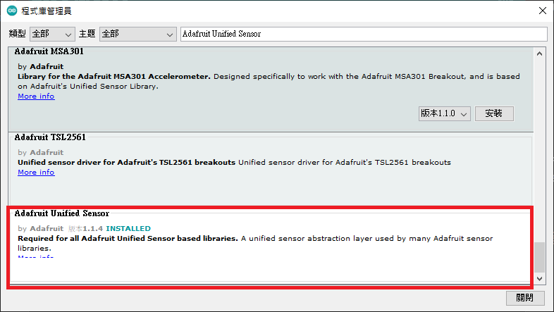
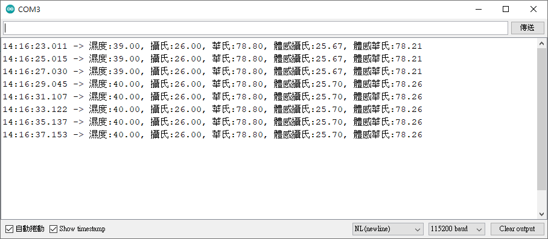

可以檢測周圍環境的濕度和溫度，腳位包含 VCC：外接 3.3V~5V，GND(接地)，DATA：數位資料輸出腳位。使用前需在Arduino IDE安裝 DHT程式庫及 Adafruit Unified Sensor程式庫。
請開啟Arduino IDE並選擇 草稿碼-匯入程式庫-管理程式庫，開啟後輸入並安裝DHT sensor library如下圖：

安裝完DHT sensor library後，請安裝Adafruit Unified Sensor如下圖(將查詢結果拉到最後)：

之後將溫溼度感測器VCC接到ESP32 5V腳位，溫溼度感測器GND接到ESP32 GND腳位，溫溼度感測器DATA接到ESP32 GPIO16腳位，接下來接上ESP32電源並輸入下列程式：
//匯入DHT程式庫
#include "DHT.h"
//定義DHT 資料腳位
#define DHTPIN 16
//定義DHT 感測器類型
#define DHTTYPE DHT11
//起始化DHT感測器物件變數 dht
DHT dht(DHTPIN, DHTTYPE);
void setup() {
Serial.begin(115200);
//啟動感測器
dht.begin();
}
void loop() {
//每2秒讀取溫溼度
delay(2000);
//讀取實際濕度值
float h = dht.readHumidity();
// 讀取實際攝氏溫度
float c = dht.readTemperature();
// 讀取實際華氏溫度
float f = dht.readTemperature(true);
// 讀取體感攝氏溫度
float hic = dht.computeHeatIndex(c, h, false);
// 讀取體感華氏溫度
float hif = dht.computeHeatIndex(f, h);
//在主控視窗輸出結果
Serial.print("濕度:");
Serial.print(h);
Serial.print(", 攝氏:");
Serial.print(c);
Serial.print(", 華氏:");
Serial.print(f);
Serial.print(", 體感攝氏:");
Serial.print(hic);
Serial.print(", 體感華氏:");
Serial.println(hif);
}
執行結果:

L9110風扇模組腳位包含INA、INB、VCC、GND，INA用於設定逆時鐘轉動，INB用於設定順時鐘轉動，INA與INB同時設定LOW時，風扇停止轉動，之後設INB為HIGH時，風扇順時鐘轉動，設INA為HIGH時，風扇逆時鐘轉動。風扇支援PWM設定，藉由ledcSetup、ledcAttachPin、ledcWrite控制風扇順時鐘或逆時鐘轉速，下列程式將INA與INB分別接ESP32 GPIO17與GPIO5 腳位，之後進行順轉5秒、停止5秒、逆轉5秒後停止。
//設定INA及INB腳位
const int INA = 17;
const int INB = 5;
void setup() {
Serial.begin(115200);
//設定腳位為輸出
pinMode(INA,OUTPUT);
pinMode(INB,OUTPUT);
//設定風扇停止轉動
digitalWrite(INA,LOW);
digitalWrite(INB,LOW);
}
void loop() {
//順轉5秒
digitalWrite(INB,HIGH);
delay(5000);
//停止5秒
digitalWrite(INB,LOW);
delay(5000);
//逆轉5秒
digitalWrite(INA,HIGH);
delay(5000);
//順轉5秒
digitalWrite(INA,LOW);
delay(5000);
}
接下來將透過PWM控制轉速，轉速(100~250)，每10秒增加50轉速。
//設定INA及INB腳位
const int INA = 17;
const int INB = 5;
void setup() {
Serial.begin(115200);
//設定腳位為輸出
pinMode(INA,OUTPUT);
pinMode(INB,OUTPUT);
//設定風扇停止轉動
digitalWrite(INA,LOW);
digitalWrite(INB,LOW);
//設定PWM頻道0用於逆轉接INA腳位，1用於順轉接INB腳位
ledcSetup(0, 5000, 8);
ledcSetup(1, 5000, 8);
ledcAttachPin(INA, 0);
ledcAttachPin(INB, 1);
}
void loop() {
//每5秒順轉50轉速
for (int i=100;i<=250;i=i+50) {
ledcWrite(1,i);
delay(5000);
}
digitalWrite(INB,LOW);
delay(5000);
//每5秒順轉50轉速
for (int i=100;i<=250;i=i+50) {
ledcWrite(0,i);
delay(5000);
}
digitalWrite(INA,LOW);
delay(5000);
}